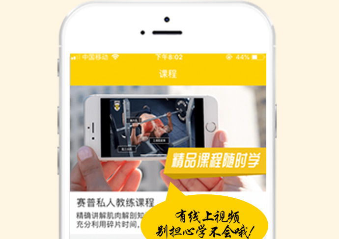
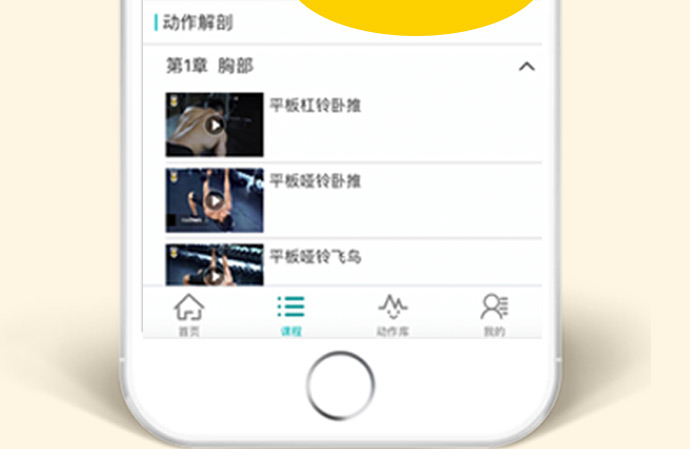

课程包含 138课时
课程时间: 一个月
原 价：10050元
优惠价格：7500元
分期付款方式：最低还款400元/月
1、CPR心肺复苏
2、体适能训练
3、运动营养
4、私教会员管理
课程简介：
掌握常用止血、敷料使用方法；掌握常用三角巾、绷带包扎方法，以及简单螺旋包扎、8字包扎方法；掌握三角巾头部帽式、胸部、腹部包扎方法；掌握大手挂、四肢骨折腱肢固定方法。课程简介：
体适能训练课程的核心重点，在于教会教练掌握与人体运动相关的运动系统（包括骨骼系统和肌肉系统）、能量系统、心血管系统、内分泌系统的基础知识。为教练设计安全、有效的训练计划提供强大的理论支持。课程包含详细的抗阻力训练动作教学，能够让教练学会肌肉力量、肌肉耐力、肌肉围度以及爆发力训练的方案设计和实际应用，使教练能够轻松帮助客户达成增肌、减脂、塑型、增强心肺功能、提升身体代谢的训练目标。 基础理论1.什么是体适能
2.运动解剖概述
3.肌纤维的应用
4.能量系统
5.心血管系统
6.内分泌系统
7.特殊人群训练建议
8.评估与测试
基础实践1.训练前准备
2.胸部训练
3.背部训练
4.肩部训练
5.手臂训练
6.腿部训练
7.臀部训练
8.腰腹训练
9.肌肉拉伸
10.训练常见问题及解决方法
11.增肌及减脂模板
课程简介：
运动营养课程的核心重点，在于让教练了解人体所需营养素的组成、分类、生理功能、参考值摄入量和食物来源。课程中详细了营养素、运动补剂与人体运动能力及人体运动后肌体恢复的关系。教练可通过掌握食物的营养价值，平衡膳食的调配及组成以及健康的饮食习惯，针对不同的客户给出与增进健康、预防疾病、提高运动能力、控制体重相关的营养建议。 营养理论1.运动营养介绍
2.基础营养
3.营养评估
4.常见减肥方法
5.体重控制的营养指导
6.增肌训练的营养指导
7.营养食品介绍
8.评估与测试
课程简介：
私教会员管理课程的核心重点是教会教练如何掌握搞笑的沟通方法，高品质的私教服务。课程中让学生学会如何在充足的专业背景下融入沟通技巧挖掘出更多的客户需求，使教练从客户接洽、体验课服务到私教课程成交以及私教后期维护的综合能力整体提高，帮助教练为客户提供更优质的私教服务。 会员管理二级1.常见客户类型分析与沟通技巧应用
2.健身教练工作职责介绍
3.体成分分析报告的测试与讲解
4.训练场地客户服务的沟通技巧
5.体验课流程
6.训练方案设计及成交技巧
课程包含 248课时
课程时间: 2个月
原 价：19800元
优惠价格：16000元
分期付款方式：最低还款1000元/月
1、CPR心肺复苏
2、体适能训练
3、运动营养
4、运动损伤防护
5、普拉提垫上课程
6、产后功能恢复
7、私教会员管理二级
课程简介：
掌握常用止血、敷料使用方法；掌握常用三角巾、绷带包扎方法，以及简单螺旋包扎、8字包扎方法；掌握三角巾头部帽式、胸部、腹部包扎方法；掌握大手挂、四肢骨折腱肢固定方法。课程简介：
体适能训练课程的核心重点，在于教会教练掌握与人体运动相关的运动系统（包括骨骼系统和肌肉系统）、能量系统、心血管系统、内分泌系统的基础知识。为教练设计安全、有效的训练计划提供强大的理论支持。课程包含详细的抗阻力训练动作教学，能够让教练学会肌肉力量、肌肉耐力、肌肉围度以及爆发力训练的方案设计和实际应用，使教练能够轻松帮助客户达成增肌、减脂、塑型、增强心肺功能、提升身体代谢的训练目标。 基础理论1.什么是体适能
2.运动解剖概述
3.肌纤维的应用
4.能量系统
5.心血管系统
6.内分泌系统
7.特殊人群训练建议
8.评估与测试
基础实践1.训练前准备
2.胸部训练
3.背部训练
4.肩部训练
5.手臂训练
6.腿部训练
7.臀部训练
8.腰腹训练
9.肌肉拉伸
10.训练常见问题及解决方法
11.增肌及减脂模板
课程简介：
运动营养课程的核心重点，在于让教练了解人体所需营养素的组成、分类、生理功能、参考值摄入量和食物来源。课程中详细了营养素、运动补剂与人体运动能力及人体运动后肌体恢复的关系。教练可通过掌握食物的营养价值，平衡膳食的调配及组成以及健康的饮食习惯，针对不同的客户给出与增进健康、预防疾病、提高运动能力、控制体重相关的营养建议。 营养理论1.运动营养介绍
2.基础营养
3.营养评估
4.常见减肥方法
5.体重控制的营养指导
6.增肌训练的营养指导
7.营养食品介绍
8.评估与测试
课程简介：
运动运动损伤防护课程的核心重点，在于教会教练能够将动作矫正和手法矫正应用到私教课程训练中，帮助客户预防运动所带来的损伤。1.生活方式的改变
2.常见损伤讲解
3.损伤原因分析
4.矫正训练模型介绍
运动损伤防护实践1.旋前变形综合症矫正方法
2.下交叉综合症矫正方法
3.上交叉综合症矫正方法
4.低头受限矫正方法
5.仰头受限矫正方法
6.头部旋转受限矫正方法
7.背手模式一受限矫正方法
8.背手模式二受限矫正方法
9.站姿前弯受限矫正方法
10.站姿后仰受限矫正方法
11.站姿旋转受限矫正方法
12.手臂上举深蹲受限矫正方法
课程简介：
普拉提垫上课程的核心重点，在于教会教练掌握普拉提垫上动作，并且在灵活运用的基础上，不仅可以用普拉提训练动作改善客户的体态问题，还可以帮助客户达成臀部塑造、核心训练、脊柱放松、力量准备五项训练需求。让教练在应对不同类型会员时，灵活地将普拉提训练融入到训练计划当中。为便于学生理解课程编排思路，以及普拉提动作应用，开阔学生思路，课程内容设计中以一节完整的普拉提私教课程进行教学。同时课程中提供普拉提训练模板，使教练不仅可以掌握私教课的授课能力，还具备普拉提小团体课的授课能力。 普拉提垫上理论1.什么是普拉提
2.普拉提的历史
3.普拉提与瑜伽的区别
4.训练系统分类
5.普拉提的训练原则
6.普拉提基础解剖
7.普拉提术语与技巧
8.一节普拉提私教课流程
普拉提垫上实践1.体态调整模板
2.臀部塑形模板
3.脊柱维护模板
4.炫腹挑战模板
5.力量准备模板
6.辅助工具使用方法
7.普拉提垫上动作归纳
8.普拉提私教课设计
9.普拉提团体课设计
课程简介：
产后功能恢复课程的核心重点是让教练掌握针对产后女性制定合理训练计划的能力。课程中让教练深入了解产后女性的特殊性和身体变化，结合整个CPT课程所学知识为产后女性设计出阶段性的功能恢复训练，使教练更有效的帮助产后客户恢复身体功能、缓解产后疼痛、调整不良体态、减掉多余脂肪塑造完美体形。 产后功能恢复1.产后恢复的好处及训练误区
2.产后女性生理、心理、体态变化分析及应对策略
3.腹直肌分离检测与修复
4.骨盆底肌功能恢复
5.疤痕恢复
6.体态调整
7.形体塑造
8.问卷调查、体验课设计、训练计划制定
课程简介：
私教会员管理课程的核心重点是教会教练如何掌握搞笑的沟通方法，高品质的私教服务。课程中让学生学会如何在充足的专业背景下融入沟通技巧挖掘出更多的客户需求，使教练从客户接洽、体验课服务到私教课程成交以及私教后期维护的综合能力整体提高，帮助教练为客户提供更优质的私教服务。 会员管理二级1.常见客户类型分析与沟通技巧应用
2.健身教练工作职责介绍
3.体成分分析报告的测试与讲解
4.训练场地客户服务的沟通技巧
5.体验课流程
6.训练方案设计及成交技巧
课程包含 362课时
课程时间: 3个月
原 价：25000元
优惠价格：20000元
分期付款方式：最低还款1200元/月
1、CPR心肺复苏
2、体适能训练
3、运动营养
4、运动损伤防护
5、普拉提垫上课程
6、产后功能恢复
7、功能性训练
8、私人健身搏击
7、私教会员管理一级
课程简介：
掌握常用止血、敷料使用方法；掌握常用三角巾、绷带包扎方法，以及简单螺旋包扎、8字包扎方法；掌握三角巾头部帽式、胸部、腹部包扎方法；掌握大手挂、四肢骨折腱肢固定方法。课程简介：
体适能训练课程的核心重点，在于教会教练掌握与人体运动相关的运动系统（包括骨骼系统和肌肉系统）、能量系统、心血管系统、内分泌系统的基础知识。为教练设计安全、有效的训练计划提供强大的理论支持。课程包含详细的抗阻力训练动作教学，能够让教练学会肌肉力量、肌肉耐力、肌肉围度以及爆发力训练的方案设计和实际应用，使教练能够轻松帮助客户达成增肌、减脂、塑型、增强心肺功能、提升身体代谢的训练目标。 基础理论1.什么是体适能
2.运动解剖概述
3.肌纤维的应用
4.能量系统
5.心血管系统
6.内分泌系统
7.特殊人群训练建议
8.评估与测试
基础实践1.训练前准备
2.胸部训练
3.背部训练
4.肩部训练
5.手臂训练
6.腿部训练
7.臀部训练
8.腰腹训练
9.肌肉拉伸
10.训练常见问题及解决方法
11.增肌及减脂模板
课程简介：
运动营养课程的核心重点，在于让教练了解人体所需营养素的组成、分类、生理功能、参考值摄入量和食物来源。课程中详细了营养素、运动补剂与人体运动能力及人体运动后肌体恢复的关系。教练可通过掌握食物的营养价值，平衡膳食的调配及组成以及健康的饮食习惯，针对不同的客户给出与增进健康、预防疾病、提高运动能力、控制体重相关的营养建议。 营养理论1.运动营养介绍
2.基础营养
3.营养评估
4.常见减肥方法
5.体重控制的营养指导
6.增肌训练的营养指导
7.营养食品介绍
8.评估与测试
课程简介：
运动运动损伤防护课程的核心重点，在于教会教练能够将动作矫正和手法矫正应用到私教课程训练中，帮助客户预防运动所带来的损伤。1.生活方式的改变
2.常见损伤讲解
3.损伤原因分析
4.矫正训练模型介绍
运动损伤防护实践1.旋前变形综合症矫正方法
2.下交叉综合症矫正方法
3.上交叉综合症矫正方法
4.低头受限矫正方法
5.仰头受限矫正方法
6.头部旋转受限矫正方法
7.背手模式一受限矫正方法
8.背手模式二受限矫正方法
9.站姿前弯受限矫正方法
10.站姿后仰受限矫正方法
11.站姿旋转受限矫正方法
12.手臂上举深蹲受限矫正方法
课程简介：
普拉提垫上课程的核心重点，在于教会教练掌握普拉提垫上动作，并且在灵活运用的基础上，不仅可以用普拉提训练动作改善客户的体态问题，还可以帮助客户达成臀部塑造、核心训练、脊柱放松、力量准备五项训练需求。让教练在应对不同类型会员时，灵活地将普拉提训练融入到训练计划当中。为便于学生理解课程编排思路，以及普拉提动作应用，开阔学生思路，课程内容设计中以一节完整的普拉提私教课程进行教学。同时课程中提供普拉提训练模板，使教练不仅可以掌握私教课的授课能力，还具备普拉提小团体课的授课能力。 普拉提垫上理论1.什么是普拉提
2.普拉提的历史
3.普拉提与瑜伽的区别
4.训练系统分类
5.普拉提的训练原则
6.普拉提基础解剖
7.普拉提术语与技巧
8.一节普拉提私教课流程
普拉提垫上实践1.体态调整模板
2.臀部塑形模板
3.脊柱维护模板
4.炫腹挑战模板
5.力量准备模板
6.辅助工具使用方法
7.普拉提垫上动作归纳
8.普拉提私教课设计
9.普拉提团体课设计
课程简介：
产后功能恢复课程的核心重点是让教练掌握针对产后女性制定合理训练计划的能力。课程中让教练深入了解产后女性的特殊性和身体变化，结合整个CPT课程所学知识为产后女性设计出阶段性的功能恢复训练，使教练更有效的帮助产后客户恢复身体功能、缓解产后疼痛、调整不良体态、减掉多余脂肪塑造完美体形。 产后功能恢复1.产后恢复的好处及训练误区
2.产后女性生理、心理、体态变化分析及应对策略
3.腹直肌分离检测与修复
4.骨盆底肌功能恢复
5.疤痕恢复
6.体态调整
7.形体塑造
8.问卷调查、体验课设计、训练计划制定
课程简介：
功能性训练课程的核心重点，在于教会教练针对不同客户的训练目标，运用所学专业知识设计出针对性的训练方案。课程包含5大类徒手训练动作和10余种功能性小工具使用方法。大大解决了如何满足所有客户训练需求的难题，更利于帮助客户从多方面提高自身的运动能力（例如：力量、柔韧、心肺、平衡、爆发力、反映、速度、协调、灵敏...），完成高质量的训练动作。1.循环训练体验
2.功能性训练介绍（包含：定义、由来、特点、应 用以及健康体适能元素、竞技体适能元素）
3.功能性训练原则：动作进退阶原则、动作模式教 学的讲解
4.循环训练的介绍、原则、注意事项讲解
5.训练计划设计
6.训练难度的变量、线上APP的应用
功能性训练实践1.徒手训练——上肢
2.徒手训练——下肢
3.徒手训练——核心
4.徒手训练——全身
5.徒手训练模板应用
6.工具训练——泡沫轴
7.工具训练——平衡半球
8.工具训练——瑜伽球
9.工具训练——战术绳
10.工具训练——药球
11.工具训练——敏捷梯
12.工具训练——弹力带
13.工具训练模板应用
14.壶铃
15.壶铃训练模板应用
16.能量管
17.能量管训练模板应用
18.悬挂带
19.悬挂带训练模板应用
20.知识拓展
21.实际案例训练计划的制定
22.复习回顾
23.理论考核
24.实操考核
课程简介：
私人健身搏击课程的核心重点是教会教练掌握搏击动作技巧及持靶技巧，为客户提供健身搏击私教课程，帮助客户提高肌肉爆发力、肌肉耐力、心肺功能、身体协调性以及神经对身体的控制能力。1.搏击课程介绍
2.格斗式
3.前手直拳
4.后直拳
5.缠手带使用方法
6.前后直拳打靶
7.前后直拳组合练习
8.步伐移动、左右闪躲技巧
9.左右闪躲加前拳法组合打靶
10.左右摆拳空击练习
11.摆拳打靶
12.直摆拳法组合空击+打靶
13.左右摇臂、下潜练习
14.直拳摆拳、侧闪下潜组合打靶
15.勾拳
16.勾拳打靶
17.直摆勾拳法组合空击+打靶
18.两人模拟情景模拟私教课场景
19.顶膝+拳膝组合打靶
20.低段位扫踢+中段位扫踢
21.拳腿组合+打靶
22.私教课程编排+复习
课程简介：
私教会员管理课程的核心重点是教会教练如何掌握搞笑的沟通方法，高品质的私教服务。课程中让学生学会如何在充足的专业背景下融入沟通技巧挖掘出更多的客户需求，使教练从客户接洽、体验课服务到私教课程成交以及私教后期维护的综合能力整体提高，帮助教练为客户提供更优质的私教服务。 会员管理二级1.常见客户类型分析与沟通技巧应用
2.健身教练工作职责介绍
3.体成分分析报告的测试与讲解
4.训练场地客户服务的沟通技巧
5.体验课流程
6.训练方案设计及成交技巧
仿实际教练课场景
 掌上教科书，复习预习两不误
让学生进入仿健身教练课的学习环境
在应用中学习训练动作指导
自然习得训练计划的设计与应用
拿来就能用的开单神器
涉及上百种训练动作
专业科学的动作组合设计
适用90%以上人群健身需求
赛普就业薪资及保障服务
赛普私教认证证书
赛普金牌导师
赛普六大校区环境
0元获得价值69元[孕产教练必备]线上课程